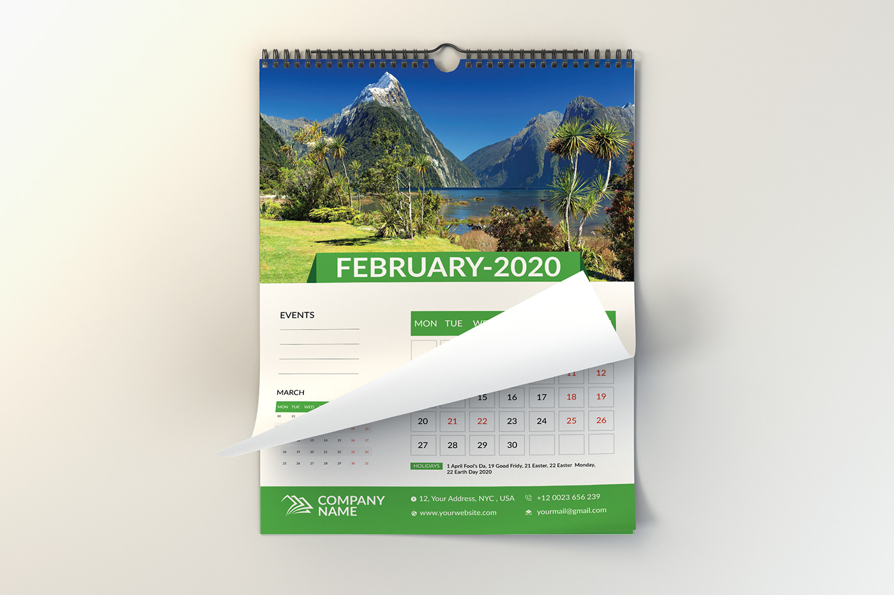

Keep track of all your appointments and more while going on with your daily routine without having to worry of forgetting any schedule or appointments. Set alarms and Calendar for all appointments/tasks, and know which task is completed and those that are still running.

How it works?
Create Appointments
Keep track of all your appointments and more while going on with your daily routine without having to worry of forgetting any schedule or appointments. Set alarms and Calendar for all appointments/tasks, and know which task is completed and those that are still running.
Set Reminder
Keep track of all your appointments and more while going on with your daily routine without having to worry of forgetting any schedule or appointments. Set alarms and Calendar for all appointments/tasks, and know which task is completed and those that are still running.